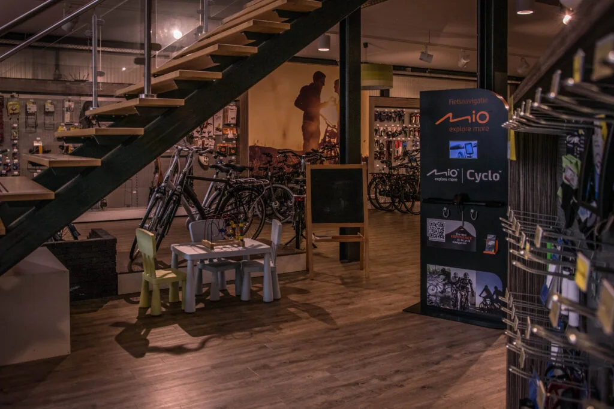

Tieks Tweewielers, gevestigd aan Weerdingerkanaal Noordzijde 161, 7831 HL Nieuw-Weerdinge, is verantwoordelijk voor de verwerking van persoonsgegevens die bezoekers via deze website aan ons verstrekken. Voor vragen over privacy kunt u contact opnemen via info@tiekstweewielers.nl of 0591 52 27 09.
Wanneer u ons belt of rechtstreeks e-mailt, ontvangen wij de contactgegevens die u zelf met ons deelt. Deze website bevat geen contactformulier. Voor de technische werking en beveiliging kunnen noodzakelijke verbindingsgegevens zoals een IP-adres worden verwerkt door de hostingprovider.
We gebruiken de gegevens uit rechtstreeks contact om vragen te beantwoorden, afspraken te bespreken en u te helpen met fietsen of service. We sturen niet automatisch reclame op basis van uw contactaanvraag.
Bij het bekijken van de servicegebiedkaart worden kaarttegels van OpenStreetMap opgevraagd. Daarbij kunnen technische gegevens zoals uw IP-adres door de aanbieder worden verwerkt. Als u zelf een postcode of adres invoert voor de afstandscontrole, wordt die invoer via onze hostingomgeving doorgestuurd naar openrouteservice voor het zoeken van de locatie en het berekenen van de autoroute. Wij gebruiken de invoer alleen om de afstand te controleren en slaan het ingevulde adres niet op in een klantenbestand. Voer geen extra persoonsgegevens in die niet nodig zijn voor het opzoeken van uw adres.
De website wordt technisch gehost via Netlify. Voor kaartweergave worden diensten van OpenStreetMap gebruikt en voor adresopzoeking en routeberekeningen openrouteservice (wanneer de checker is geactiveerd). Bij contact per e-mail verwerkt de betrokken e-mailprovider uw bericht. Wij verkopen geen persoonsgegevens.
Contactberichten bewaren we niet langer dan nodig is voor de beantwoording en eventuele wettelijke verplichtingen. Wij gebruiken geen advertentiepixels of analysecookies om bezoekers te volgen. Technisch noodzakelijke gegevens kunnen door onze dienstverleners worden verwerkt om de website te laten functioneren en te beveiligen. Wij beperken toegang tot persoonsgegevens tot wie die nodig heeft.
U kunt ons vragen welke gegevens wij van u hebben, om deze te corrigeren of te verwijderen, of bezwaar maken tegen bepaalde verwerkingen. Stuur daarvoor een bericht aan info@tiekstweewielers.nl. U heeft ook het recht om een klacht in te dienen bij de Autoriteit Persoonsgegevens.
Laatst bijgewerkt: 20 oktober 2026.